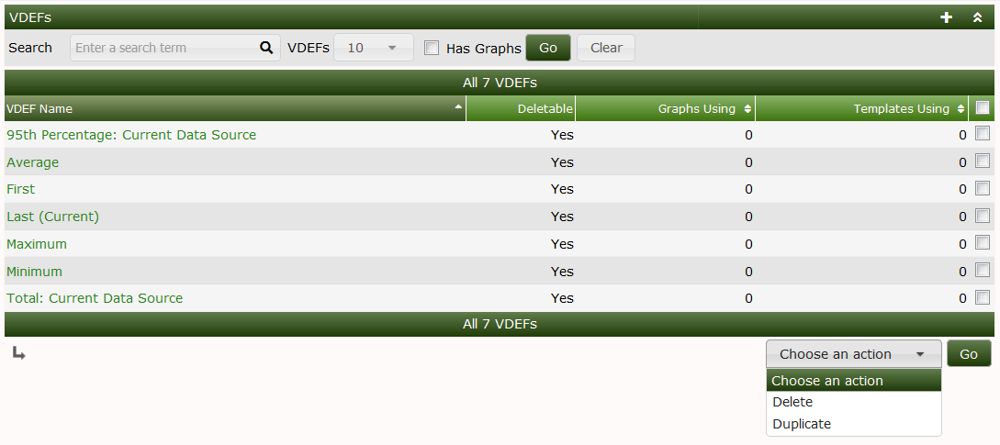
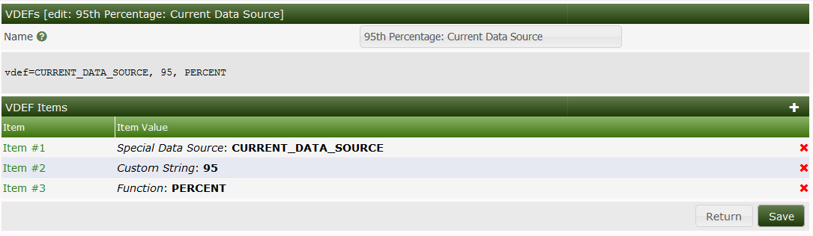
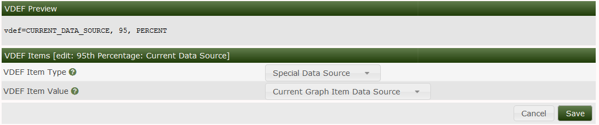
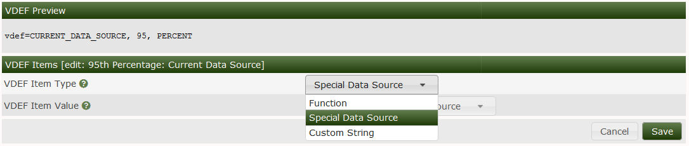
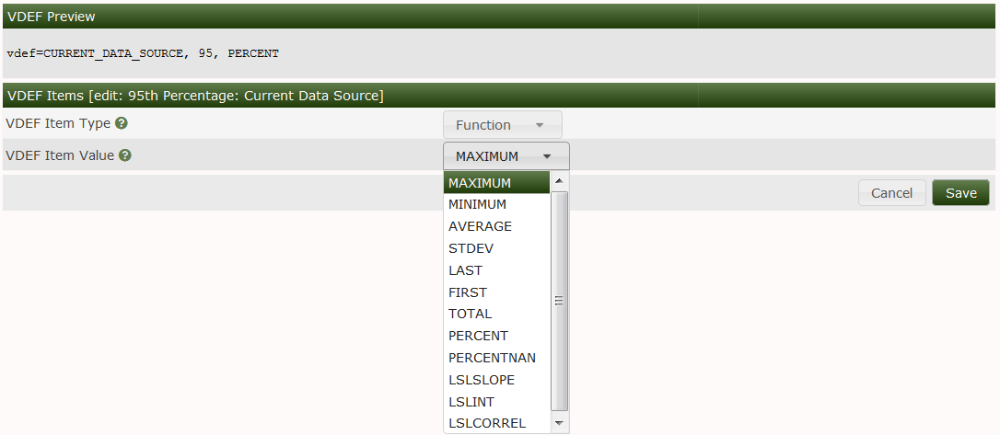

VDEF's in Cacti are a one to one analog to VDEF's in RRDtool. Cacti simply provides and interface to create and manage them. Once the VDEF's are created in Cacti they can be imported and exported globally.
VDEFS's are mathematical formulas that instead of operating on just one Data Point in the RRDfile, oerate on the entire Data Set in the time range selected. So, VDEF's become an excellent tool to replace Nth Percentile and Bandwidth function in Cacti with the VDEF equivalents.
The are referenced in Cacti graphs as VNAMES. However, as mentioned before Cacti automatically assigns VNAMES. So, to perform complex operations, you will have to experiment to determine the VNAME of your VDEF as you build your Graph Template. But in their simplest forms, they are quite easy to use.
The format of the mathematical formulas is called Reverse Polish Notation (RPN). RPN was and is an early form of how Engineers entered equations into early HP and other Calculators to solve Engineering problems. The reason we still use it today, is that it follows a simple Stack principle. In other words, it's not broken.
In the image below, you can see all the VDEF's that are included in Cacti by default. They are included just to get you thinking about how your would use them. You can see straight away the first and the last items are 95th Percentile and Bandwidth (or Total) VDEF's. Other examples are pretty self explanatory.
You will also note that you can Delete or Duplicate the VDEF's, but as with CDEF's you can not Delete a VDEF that is being used in a Graph.

In the image below, you can also see that their interface very closely resembles the CDEF Interface. Unlike the CDEF's, there is presently only one Special Data Source and that's the Current Data Source, which makes sense when you think about it.

In the image below, you can see an example of a Single completed VDEF for 95th Percentile of the Current Data Source. Pretty straightforward.

In the next two images, you can see the VDEF Item Types and the comprehensive list of VDEF functions. Again, you can reference the RRDtool Documentation for usage examples for more information.


Copyright (c) 2004-2024 The Cacti Group